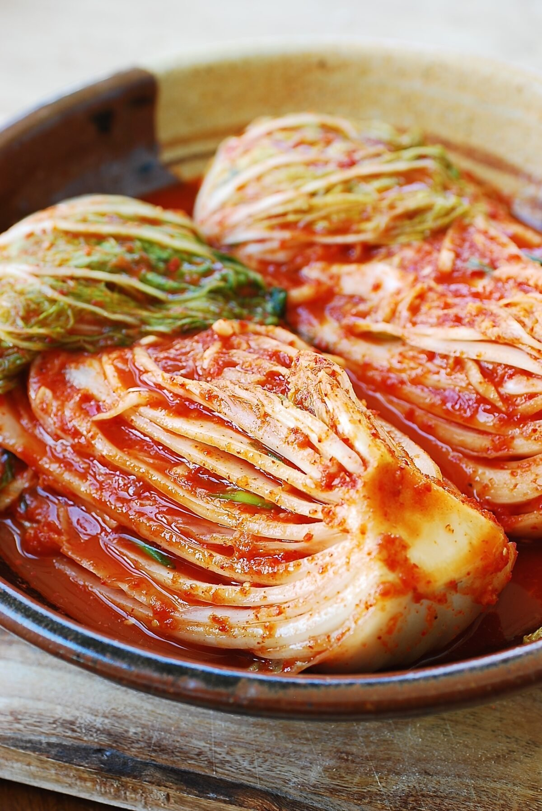

<h1>Kimichi</h1>

<h3>Description</h3>
<p>Kimichi is a traditional Korean food</p>
<h4>Ingredients</h4>
<ul>Water</ul>
<ul>Vegetables</ul>
<ul>Spices</ul>

<h4>Steps</h4>
<ol>Put water and spices into Vegetables</ol>
<ol>Put into a botter and stroe for one month</ol>
